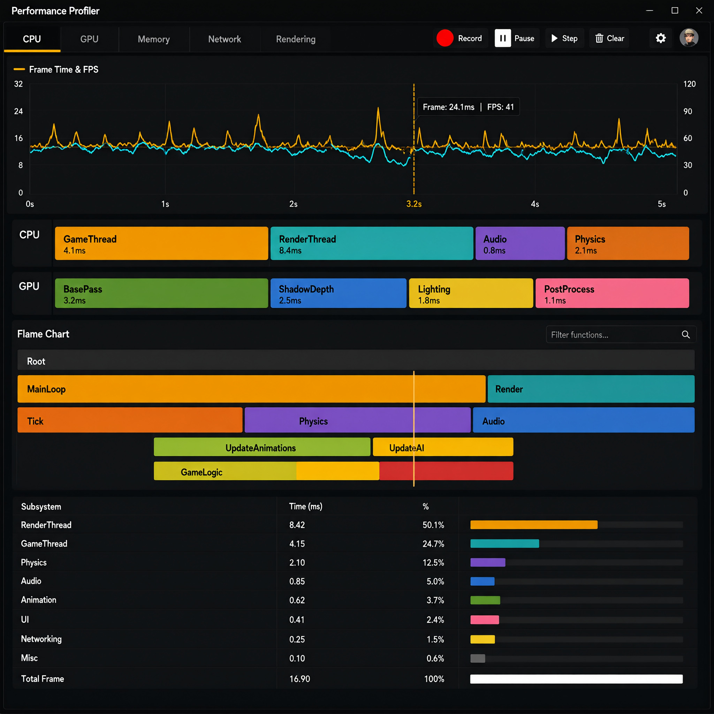

Релиз 2.4 «Hexhead»
Опубликовано 12 марта 2026 · команда Core · 6 минут чтения
Мы полгода переписывали рендерер и конвейер ассетов. Рассказываем, что изменилось и как перейти со старой версии.
Главное
- new Кластеризованный свет — до 4096 источников без ручного батчинга;
- new WebGPU-бэкенд — сборка под браузер из той же кодовой базы;
- new Профилировщик v2 — flame chart систем и swimlane CPU/GPU;
- imp Crate собирает бандлы в 3.1 раза быстрее (параллельный импорт);
- imp Bolt: непрерывное обнаружение столкновений (CCD) для быстрых тел;
- fix Утечка в job graph при 128+ потоках.

Script.update съедает 4.1 мс.Как мигрировать
терминалbash
screw upgrade --to 2.4
[crate] резервная копия проекта … ok
[crate] миграция screwdriver.toml … ok
[crate] пересборка бандлов … 42 ассета за 3.8 c
[ ok ] обновление завершеноЕдинственное ломающее изменение: секция [render.lighting] заменена на
[render.clustered]. Старый ключ выдаёт предупреждение и работает до 3.0.
Код: новый источник света
scripts/light.lualua
local Light = screw.component("Light")
function Light:on_start()
self.kind = "point" -- point | spot | dir
self.intensity = 1200 -- люмены
self.range = 18.0 -- метры
self.color = vec3(1.0, 0.78, 0.42)
screw.render.add_clustered_light(self.entity, self)
endПолный список изменений — в истории изменений.